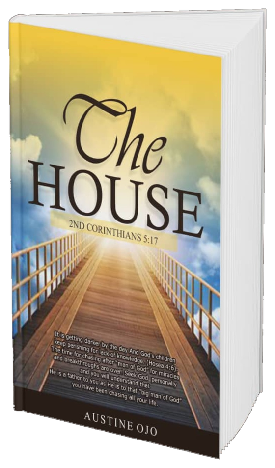
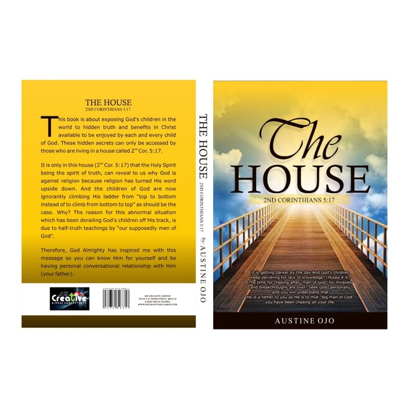
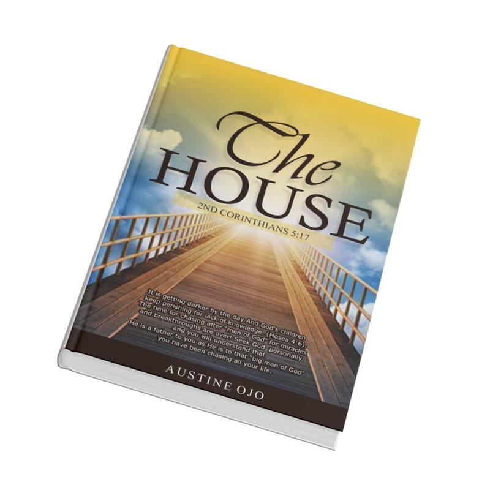

A Christian book by Austine Ojo
The House
2nd Corinthians 5:17
Know God for yourself. Grow in your life in Christ.
The House invites you to look beyond religious routine and pursue a personal relationship with God. Across fifteen chapters, Austine Ojo explores identity in Christ, the knowledge of God, meditation, discipleship, and a life of prayer.
Paperback available on WhatsApp (opens in a new tab)- 15chapters
- 5:172 Corinthians
- ₦3,000eBook
About the Book
A call to know the Father personally
What does it mean to live as a new creation in Christ? In The House, Austine Ojo uses 2 Corinthians 5:17 as the central picture for exploring a believer's relationship with God. Drawing on Scripture, everyday illustrations, and personal testimony, he calls readers to seek God Himself, grow in understanding, and live out their faith in daily life.
-
Identity in Christ
Consider what it means to represent Christ in the world.
-
Knowing God
Explore His presence, power, and the importance of spiritual understanding.
-
A life of devotion
Make room for Scripture, meditation, and prayer.
-
Faith in action
Reflect on discipleship, service, relationships, and sharing Christ with others.
Fifteen chapters
Explore the fifteen chapters
Follow the book's journey from your identity as Christ's ambassador to the habits and relationships that shape a life of prayer.
-
Chapter 01
Ambassador
What does it mean to represent Christ in everyday life? This chapter uses the role of an ambassador to examine the believer's responsibilities, priorities, and conduct, calling readers to seek God's kingdom rather than make personal gain the centre of their faith.
-
Chapter 02
Solution From God
Through biblical examples of choice, warning, and response, this chapter considers how people respond to God's direction. It invites reflection on repentance, responsibility, and the role of parents in teaching their children the ways of God.
-
Chapter 03
God Is Everywhere
Reflect on God's presence and the meaning of new life in Christ. Austine Ojo develops the book's central picture of 2 Corinthians 5:17 as “the house,” inviting readers to consider repentance, belonging, and their relationship with the Father through Jesus.
-
Chapter 04
Omnipotent God
This chapter reflects on God's unlimited power and the place of His Word in the believer's life. It also challenges the elevation of human ministers above God, urging readers to direct their worship and gratitude to Him.
-
Chapter 05
The Almighty Healer Omniscience God
Explore the author's reflections on God as all-knowing and as healer, through Scripture and testimony. The chapter emphasizes faith and discernment, including the need to examine spiritual claims carefully; it explicitly states that trusting God is not a rejection of medical help.
-
Chapter 06
Ask for Knowledge
Why does spiritual understanding matter? Through Scripture and personal testimony, the author reflects on knowledge, patience, and learning to seek God's direction. He connects the pursuit of understanding with the choices and challenges of everyday life.
-
Chapter 07
The Church Is Here
Beginning with Peter and John's encounter with the man at the temple gate, this chapter asks what it means for God's presence to be expressed through His people. It challenges readers to look beyond buildings and religious display to a living faith in Christ.
-
Chapter 08
Beware of Wrong Yoke
Consider the relationships, teachings, and influences that shape your walk with God. This chapter warns against deceptive traditions and divided loyalties, encouraging readers to examine their associations and keep their devotion centred on Christ.
-
Chapter 09
Train Yourself in Meditation
Make deliberate room for God's Word. This chapter encourages the practice of Scripture meditation, quiet reflection, and personal fellowship with God, presenting these habits as part of growing in understanding and becoming equipped for a life of faith.
-
Chapter 10
Pyramid
Using a pyramid as an illustration, the author considers the shared responsibility of encouraging others and bringing people to Christ. The chapter calls readers to care about others' spiritual growth and to make sharing their faith part of daily life.
-
Chapter 11
How Fortified Are You for This Venture?
What prepares a believer to serve and share Christ with others? This chapter presents discipleship as a process of training, surrender, and growth, asking readers to examine self-interest and become willing to learn under Christ's direction.
-
Chapter 12
What Will You Have Me Do?
Drawing on Paul's encounter with Christ, this chapter explores a response of willing service. It asks readers to consider how renewed life in Christ should shape their direction, obedience, and desire to participate in God's work.
-
Chapter 13
Stop Seeking God's Hand, Seek His Face
Are you seeking only what God can give, or seeking to know Him? This chapter turns attention to fellowship with God, considering the relationship between asking, faith, patience, and the desire to draw near to the Father.
-
Chapter 14
Prayer Is Everything
This chapter encourages persistence in prayer and explores different expressions of it, including petition, thanksgiving, and intercession. It connects prayer with love for others, gratitude, commitment, and the integrity of the life behind the words.
-
Chapter 15
Hindrances to Prayers
Examine the attitudes and habits that the author identifies as obstacles to prayer. With attention to forgiveness, peace in the home, and persistent patterns of sin, the chapter calls readers to honest self-examination and a readiness to change.
The artwork
Inside the cover


- Title
- The House — 2nd Corinthians 5:17
- Author
- Austine Ojo
- Publisher
- Mine Shelter Nigeria Limited
- ISBN
- 978-978-973-668-3
Get the eBook
Order The House
₦3,000 eBook
- Transfer ₦3,000 to the account below
- Send proof on WhatsApp to +234 803 700 8560
- Receive your eBook on WhatsApp
Bank transfer
HARD TRUTH GOSPEL MISSIONGTBank (Guaranty Trust Bank)
- Naira (NGN)3001633102
- US Dollar (USD)3001633126
- British Pound (GBP)3001633140
- Euro (EUR)3001633164
Paying from outside Nigeria? Use the USD, GBP or EUR account and confirm the amount on WhatsApp first.
Reader questions
Questions readers ask
What is The House about?
It explores life in Christ, knowing God personally, meditation, discipleship, and prayer through Scripture reflections and the author's experiences.
Why is 2 Corinthians 5:17 on the cover?
The author uses the verse's theme of new life in Christ as the central picture of “the house” throughout the book.
How many chapters are there?
There are fifteen chapters, from “Ambassador” to “Hindrances to Prayers.”
How can I get a copy?
Order the eBook for ₦3,000. Transfer to the Hard Truth Gospel Mission account shown in Order the eBook, then send your proof of payment on WhatsApp to +234 803 700 8560 (opens in a new tab).